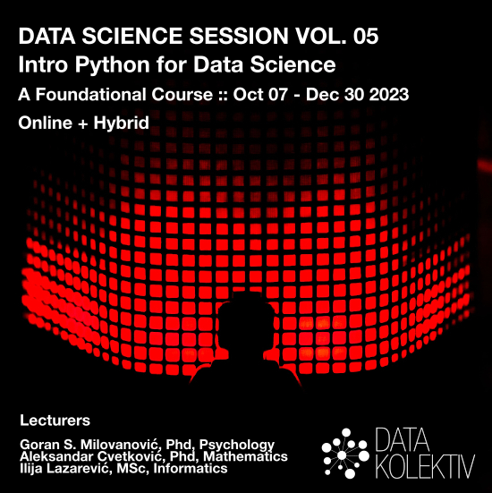
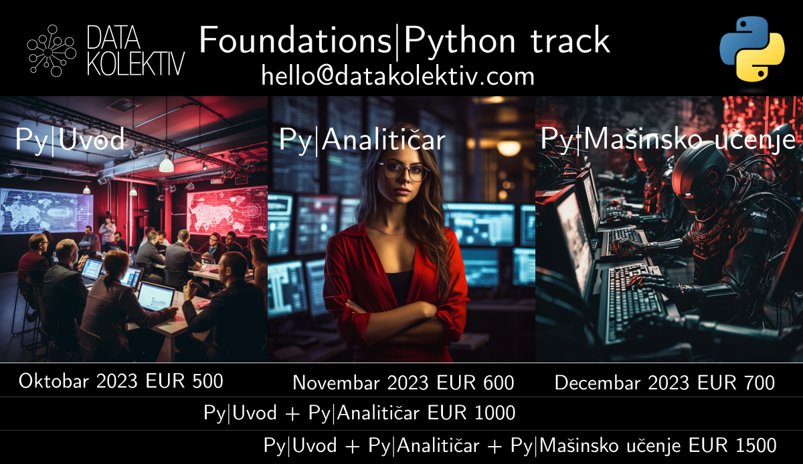
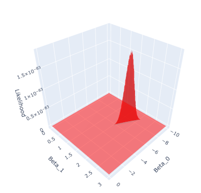
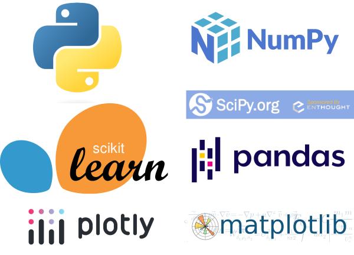

DATA SCIENCE SESSIONS VOL. 05
Uvod u Python za Data Science
7. oktobar - 30. decembar 2023, Beograd
+ Online: Slack/GitHub

>> Prijavite se na: hello@datakolektiv.com <<

>> Prijavite se na: hello@datakolektiv.com <<
Cena
Kurs se sastoji iz tri (3) modula. Polaznici mogu da pohađaju zasebno bilo koji od modula u zavisnosti od procene njihove prethodne pripremljenosti. Za pohađanje dva modula ili uzimanje kursa u celini postoje popusti:
- Modul 1. Uvod u Python za Data Science: EUR 500
- Modul 2. Python analitičar podataka: EUR 600
- Modul 3: Mašinsko učenje u Python: EUR 700
- Modul 1 + Modul 2: EUR 1000 (u dve rate za fizička lica)
- Modul 1 + Modul 2 + Modul 3: EUR 1500 (u tri rate za fizička lica)

Klasičan Data Science kurs DataKolektiv koji su pohađale već generacije polaznika sada i u programskom jeziku Python. Desetina polaznika od 2020 godine postavilo je sa nama solidne u osnove u Data Science i mašinskom učenju, ubrajajući dvanest stručnjaka za marketinška istraživanja, produkt menadžere, analitičare, iskusne softverske inženjere koji rade na prekvalifikaciji u ML/AI, studente i postdiplomce na pragu tržišta rada, i čak iskusne stručnjake u ML/AI!
Ovaj kurs je egzaktna replika našeg klasičnog DATA SCIENCE SESSIONS kursa u programskom jeziku R - sada implementiranog u programskom jeziku Python na zahtev naših klijenata! Tri meseca intenzivne obuke sa minimalnim pretpostavkama: od osnova Python programiranja, preko uvoda u matematičku statistiku nivoa neophodnog za Data Science, ka najbitnijim algoritmima mašinskog učenja u praksi + vizuelizacija podataka i izveštavanje.
Plan rada
Ciljevi
Pošto završite ovaj kurs sa nama, vi ćete moći da
- usvojite podatke za rad iz nekoliko različitih izvora (baza podataka, Internet, fajlovi na vašem računaru);
- podatke pročistite i restruktuirate tako da budu pripremljeni za potrebe analitike i/ili primenu mašinskog učenja na njima;
- podatke vizuelizujete i uradite eksploratornu analizu podataka (EDA), postupak kojim ustanovljavate osnovne pravilnosti i izvlačite značajne uvide iz podataka;
- sa sigurnošću rezonujete o rezultatima statističkih analiza, modela, i testova hipoteza, uključujući naravno sve bitne forme popularnog A/B testiranja;
- primenite nekoliko različitih modela mašinskog učenja za rešavanje regresionih i klasifikacionih problema (ovakvi problemi pokrivaju 90% problema u oblasti poslovne analitike; naš kurs pokriva sve najbitnije algoritme mašinskog učenja za njihovo rešavanje);
- napravite izveštaj o rezultatima vašeg rada iz popularnog Jupyter Notebook sistema i prosledite ga u HTML ili PDF formatu vašim klijentima.
Drugim rečima, na ovom kursu prolazimo sve faze kompletnog projekta u Data Analytics i Data Science do nivoa softverskog inženjerstva AI rešenja (MLOps odn. plasiranja kompletnih ML baziranih aplikacija u produkciona okruženja, što je postupak koji jednostavno zahteva kurs za sebe).
Izvesno onaj kurs u Data Science i ML u Python koji ste oduvek tražili
Prema svim saznanjima koje imamo, ovaj intenzivan kurs Data Science i mašinskog učenja (ML) u Python za je jedinstven u Srbiji: prilagođen početnicima u Python programarinaju (ili, uz minimalnu pripremu, onima bez ikakvog predznanja) i imaju makar elementarno (srednjoškolsko) predznanje iz statistike i verovatnoće, naš DATA SCIENCE VOL.04 :: Uvod u Python za Data Science pruža priliku onima koji su spremni da posvete tri meseca nauci o podacima, vizuelizacijama i mašinskom učenju da kroz intenzivan, neposredan rad sa trojicom iskusnih eksperata u DataKolektiv savladaju rad u suštinskim paketima za Data Science u Python: Numpy i Scipy, Pandas, Statsmodels, Scikit Learn, Matplotlib, Seaborn, i Plotly.
ML/Data Science su beskrajno interesantni (i perspektivni)
U ovim oblastima su dobri oni koji mogu da ih zavole, znaju da uzmu inženjerski pristup problemima, radoznali su i žele da oslobode vrednost ogromnih količina podataka koje svet kreira svakodnevno. ML je već centralni deo mnogih proizvoda u IT-u uopšte, a odavno je sržni deo analitike poslovanja.
Jaz između potražnje i ponude kvalifikovanog kadra na tržištu je neverovatan, što ovo čini izvrsnim karijernim izborom. Pogledajte koliko vremena ostaju otvoreni oglasi za poslove u Data Science pa ćete moći da zamislite koliko je teško naći pravu osobu za tako nešto.

Na ovom grafikonu se vidi kompletna funkcija verodostojnosti (engl. Likelihood function) jednostavnog linearnog regresionog modela. Zvuči komplikovano? To ćete vi da naučite da uradite u Python “na ruke” i razumete do detalja uz nas!
[!!!]Ograničen broj polaznika i personalizacija
DataKolektiv nikada ne radi sa velikim brojem polaznika, zato što tokom učešća na našim kursevima personalizujemo rad prema vašim potrebama! To garantuje da ćete sa nama provesti dovoljno vremena u radu i moći da diskutujete uživo i online baš sva pitanja koja budete imali, razmenite ideje sa nama - i čak kodirate zajedno sa nama u pair-programming sesijama. Na primer, tokom ovog kursa imaćemo više celodnevnih sesija uživo, ali smo pored toga radnim danima praktično non-stop na raspolaganju online na Slack kanalu kursa i GitHub gde radimo code review za vas, savetujemo vas, delimo dopunske materijale, organizujemo 1:1 konsultacije na Google Meet kada je to potrebno, timski rad u malim grupama, i naravno odgovaramo na baš, baš sva vaša pitanja! :-) DataKolektiv radi već godinama po ovoj metodologiji i to nam omogućava da se svakom polazniku posvetimo maksimalno i precizno u skladu sa njegovim potrebama!
Šta radimo konkretno?
Kompletna obuka za (a) osnove Python programiranja i upravljanje podacima (Numpy, Pandas, rad sa relacionim bazama podatka, preuzimanje podataka sa Interneta preko API poziva), (b) vizuelizacija podataka (statička i interaktivna) i izveštavanje o rezultatima kroz Jupyter Notebooks, (c) osnove teorije verovatnoće i matematičke statistike u Data Science, i (d) Machine Learning metode nadgledanog učenja (Supervised Learning) u programskom jeziku Python, sa studijama poslovnih problema u oblasti predikcije cena tržišta nekretnina, predikcije popularnosti online sadržaja, predikcije odlaska korisnika (churn) i drugih. Od linearne regresije do Random Forest modela - sve u danas sve više i više ubedljivo najpopularnijem programskom jeziku na svetu i u ovoj oblasti: Python.

U DataKolektiv smo prilično pragmatični i naš pristup je kompletno, totalno praktičan: cilj nam je da vi na kraju kursa jednostavno znate da neki problem pred sobom rešite! Matematičke osnove predajemo, ali isključivo do nivoa koji je neophodan za razumevanje modeliranja u ML i Data Science; sve ostalo učite tako što učite da to nešto isprogramirate, a vaše znanje razvijate i testirate na praktičnim primerima i diskutujete sa nama. Mi smo iskusna konsultanstka kuća u ML i Data Science, pružali smo usluge nekim od najvećih provajdera podataka na svetu uopšte i vodećim evropskim bankama, i kada učite sa nama, učite isto ono što mi radimo za naše klijente i naplaćujemo im: pristup je prilično “odmah u vodu, i plivaj” (uz našu pomoć).
Predavači
Goran S. Milovanović, Phd. Studirao matematiku, filozofiju, i psihologiju, na Beogradskom i Njujorškom (NYU) univerzitetu, doktorirao psihologiju. Programer od svoje desete godine, objavio prvi naučni rad sa dvadeset godina, sarađivao sa vrhunskim kognitivnim naučnicima i objavljivao radove citirane u Stevens’ Handbook of Experimental Psychology. Višegodišnje iskustvo u analitici i mašinskom učenju na nekim od najvećih sistema podataka u svetu (Wikidata), član programskih odbora evropskih konferencija u Data Science. Kao individualni konsultant, u saradnji sa američkim edu startups, i sa DataKolektiv obrazovao je desetine ljudi za rad u Data Science i ML.
Aleksandar Cvetković, Phd. Završio doktorske studije primenjene matematike u Italiji (GSSI – Lakvila, SISSA – Trst) baveći se naučno-istraživačkim radom u oblasti kontrole i optimizacije. Autor i koautor nekoliko naučnih radova objavljivanih u vodećim internacionalnim časopisima. Višegodišnje iskustvo u ML industriji i edukaciji, sa fokusom na mašinsko učenje, 3D kompjutersko viđenje, grafovske neuronske mreže i ubrzavanje rada ML algoritama na hardveru, trenutno u gejming industriji.
Ilija Lazarevic, MSc. Završio master studije informatike na Univerzitetu u Kragujevcu, učestvovao u nastavi iz predmeta Operativni sistemi. Višegodišnje iskustvo na pozicijama softverskog inženjera i inženjera mašinskog učenja, specijalista za (a) probleme automatske procene cena (pricing) u domenu nekretnina na međunarodnom tržištu, i (b) razvoj sistema za preporuke (recommendation engines) u domenu kazino igara.
Program rada i kalendar kursa
Svake subote od 23. septembra do 16. decembra radićemo 10:00 - 18:00 (sa pauzom za ručak) u Beogradu. Radnim danima, preko Slack i GitHub platformi, radimo asinhrono, što praktično znači da smo vam u realnom vremenu dostupni za pomoć i savete u vezi vežbanja (labs) koja ćemo podeliti posle nastave u subotu, dodatne diskusije, i video pozive po potrebi. Sesija 00 će biti organizovana online pre početka kursa da proverimo sve neophodne instalacije i upoznamo se. Završne sesije (23, 24) su završna radionica kursa na kojoj ćemo razvijati jedan kompletan Data Science projekat zajedno.
Priprema: instalacije, organizacija sistema, i uvodna čitanja
- Instalacija Python 3.8.10
- Kreiranje virtuelnog okruženja (venv) + instalacije paketa
- Instalacija Visual Studio Code IDE
- Instalacija MariaDB baze podataka
- Instalacija VS Code ekstenzije za rad sa Jupyter Notebooks
- Instalacije i setovanja za Git/GitHub + organizacija naše Slack platforme
Oktobar 14
- Sesija 00. Provera instalacija, snalaženje u radnom
okruženju, i pregled kursa.
- Provera ispravnosti instalacija i testrianje
- Kako raditi u radnom okruženju kursa: VS Code, Git, GitHub
- Organizacija rada i komunikacija
- Sesija 01. Osnove + intuitivno razumevanje programskog
jezika Python u kontekstu Data Science
- Python kao kalkulator
- Elementarna matematika u Python
- Tipovi: Set, Tupple, List, Dictionary
- Osnovne operacije sa stringovima
- Učitavanje jednog Pandas DataFrame i rad sa njima: Series
- Sesija 00. Provera instalacija, snalaženje u radnom
okruženju, i pregled kursa.
Oktobar 21
- Sesija 02. Fundamentalni tipovi podataka i klase; subsetting (“seckanje”) Pandas DataFrame-a
- Napredni rad sa tipovima: Sets, Tuples, Lists, Dictionaries
- Stringovi, detaljnije
- Pandas DataFrame, detaljnije
- Seckanje DataFrame klase: loc(), iloc(), indexes
- Još više obrad Pandas DataFrame
- Osnovne vizualizacije podataka iz Pandas
- Sesija 03. Kontrola toka, funkcije, I/O operacija. Više on
Pandas DataFrame: apply
- Iteracije: For, While
- Odluke: If … Else
- Defanzivno programiranje: Try… Except
- Map za liste, zip
- I/O operacije: os modul, otvori fajl, piši
- Pandas: apply
- još o seckanju (subsetting) DataFrame klase
- Agregacije u Pandas: filter, groupBy, agg
Oktobar 28
- Sesija 04. Numpy i Pandas. Koncept broadcasting u
Numpy
- Uvod u Numpy: vektorizacija Python
- Broadcasting
- Osnove vektorske i matrične aritmetike u Numpy
- Iz Numpy u Pandas i nazad: odnos struktura podataka u dva ključna paketa
- Sesija 05. Stringovi i regularni izrazi
- Obrada stringova
- Regex
- Primer: razvoj term-document matrice u Python
- Sesija 04. Numpy i Pandas. Koncept broadcasting u
Numpy
Novembar 04
- Sesija 06. Exploratory Data Analysis (EDA)
- EDA studija slučaja
- Fundamenti Matplotlib i Seaborn vizuelizacija
- Pandas, pivot + agregacije
- Primeri
- Sesija 07. Relacione strukture i pivot u Pandas
- Relacione strukture u Pandas
- Tipovi join operacija i primena
- Pandas
pivot: iz wide u long format i nazad krozmelt - Primeri
- Sesija 06. Exploratory Data Analysis (EDA)
Novemabar 18
- Sesija 10. Rad sa relacionim bazama podataka (RDBS) iz
Python u lokalu
- Instalacija MariaDB/PostrgreSQL
- Okvir za rad sa RDBS u Python
- Crash Course: SQL
- Paketi: Pandas, SciPi, Matplotlib
- Sesija 10. Rad sa relacionim bazama podataka (RDBS) iz
Python u lokalu
Novembar 25
- Sesija 08. Uvod u teoriju verovatnoće u Python I. Slučajne
promenljive i funkcije verovatnoće
- Teorija verovatnoće
- Funkcije verovatnoće: funkcija mase verovatnoće, kumulativna funkcija
- Diskretne distribucije: binomijalna, geometrijska, uniformna, Poisson
- Paketi: Numpy, SciPi, Pandas, Matplotlib, Seaborn
- Sesija 09. Uvod u teoriju verovatnoće u Python II: Slučajne
promenljive i funkcije verovatnoće
- Kontinuirane distribucije: Normalna, uniformna, eksponencijalna
- Funkcije verovatnoće: funkcija gustine verovatnoće, kumulativna funkcija, inverzna kumulativna
- Paketi: Numpy, SciPi, Pandas, Matplotlib, Seaborn
- Sesija 08. Uvod u teoriju verovatnoće u Python I. Slučajne
promenljive i funkcije verovatnoće
Decembar 02
- Sesija 11. Uvod u teoriju verovatnoće u Python III: uslovna
verovatnoća i Bajesova teorema. Osnove teorije ocene (estimation
theory)
- Uslovna verovatnoća
- Pojam multivarijantne distribucije
- Bajesova teorema
- Sampling distribucija proseka i njena standardna greška
- Pristrasnost (bias) i varijansa (variance) statističke ocene
- Paketi: SciPi, Numpy, Matplotlib, Statsmodels, scikit-learn
- Sesija 12. Uvod u statističku teoriju ocene I:
razumevanje logike testiranja hipoteza i statističkog modeliranja.
- \(\chi^2\)-distribucija i statistički test
- Numerička simulacija: Centralna granična teorema
- Koncepti kovarijanse i korelacije
- Prosta linearna regresija
- Paketi: SciPi, Numpy, Matplotlib, Statsmodels, scikit-learn
- Sesija 11. Uvod u teoriju verovatnoće u Python III: uslovna
verovatnoća i Bajesova teorema. Osnove teorije ocene (estimation
theory)
Decembar 09
- Sesija 13. Uvod u statističku teoriju ocene II. Parcijalna i
semi-parcijalna korelacija. Logika statističkog modeliranja. Na scenu
stupa Sim-Fit petlja. Pristrasnost i varijansa statističke ocene.
Parametrijski bootstrap u linearnoj regresiji.
- Paketi: Statsmodels, SciPi, Matplotlib.
- Sesija 14. Uvod u statističku teoriju ocene III. Multipla
linearna regresija. Dijagnostika linearnog modela. Uloga semi-parcijalne
korelacije u ovom modelu. Dummy (one-hot) kodiranje kategoričkih
prediktora. Ugnježdeni modeli.
- SciPi, Matplotlib
- Statsmodels i scikit-learn za linearnu regresiju
- Sesija 13. Uvod u statističku teoriju ocene II. Parcijalna i
semi-parcijalna korelacija. Logika statističkog modeliranja. Na scenu
stupa Sim-Fit petlja. Pristrasnost i varijansa statističke ocene.
Parametrijski bootstrap u linearnoj regresiji.
Decembar 16
- Sesija 15. Uvod u statističku teoriju ocene IV. Kompletno
objašnjenje logike statističkog modeliranja: optimizacija prostog
linearnog regresionog modela “na ruke”. Razumevanje zašto je učenje isto
što i optimizacija: pojam minimizacije greške modela. Regularizacija (L1
i L2) u regresionim problemima.
- SciPi, Matplotlib, Plotly
- Statsmodels i scikit-learn za linearnu regresiju
- Sesija 16. Generalizovani linearni modeli I. Problem binarne
klasifikacije: Binomijalna logistička regresija. Teorija verovatnoće:
ocena maksimalne verodostojnosti (engl. Maximum Likelihood Estimate,
MLE).
- Numpy, SciPi, Matplotlib
- Statsmodels i scikit-leanr za Binomijlanu linearnu regresiju
- Sesija 15. Uvod u statističku teoriju ocene IV. Kompletno
objašnjenje logike statističkog modeliranja: optimizacija prostog
linearnog regresionog modela “na ruke”. Razumevanje zašto je učenje isto
što i optimizacija: pojam minimizacije greške modela. Regularizacija (L1
i L2) u regresionim problemima.
Decembar 23
- Sesija 17. Generalizovani linearni modeli II. Multinomijalna
regresija za klasifikacione probleme. ROC analiza za klasifikacione
probleme. Dopunska diskusija ocena maksimalne verodostojnosti.
- Numpy, SciPi, Matplotlib, Seaborn
- Statsmodels i scikit-learn za Multinomijalnu regresiju
- Sesija 18. Generalizovani linearni modeli III. Poisson
regresija. Negativna binomijalna regresija.
- Kros-validacija regresionih problema
- SciPi, Matplotlib
- Statsmodels i scikit-learn za Poisson i Negativnu bimonijalnu regresiju
- Sesija 17. Generalizovani linearni modeli II. Multinomijalna
regresija za klasifikacione probleme. ROC analiza za klasifikacione
probleme. Dopunska diskusija ocena maksimalne verodostojnosti.
Decembar 30
- Sesija 19. Kros-validacija klasifikacionih problema. Uvod u
Decision Tree model: komplikovani problemi klasifikacije i moćna
rešenja. Elementi teorije informacija za klasifikaciona drveta.
- Numpy, Pandas, Scipy, scikit-learn
- Sesija 20. Klasifikaciona i regresiona drveta (CART).
Pre-pruning i post-pruning u Decision Tree modelu.
- Paketi: Numpy, Pandas, Scipy, scikit-learn
- Sesija 19. Kros-validacija klasifikacionih problema. Uvod u
Decision Tree model: komplikovani problemi klasifikacije i moćna
rešenja. Elementi teorije informacija za klasifikaciona drveta.
Decembar 09
- Sesija 21. Random Forest modeli: Bagging, Out-Of-Bag (OOB)
Error, Bootstrap uzorci + Random Subspace metod
- Teorijska nastava: Bagging pristup, Random Subspace metod
- Paketi: scikit-learn
- Sesija 22. Random Forests: studije slučajeva (regresioni i
klasifikacioni problemi)
- SciPi, Matplotlib, Scikit-learn
- Sesija 21. Random Forest modeli: Bagging, Out-Of-Bag (OOB)
Error, Bootstrap uzorci + Random Subspace metod
Decembar 16
- Sesija 23 + 24 = finalna radionica kursa (projektni rad).
Šta naši polaznici pišu o našim kursevima?
Pogledajte šta bivši polaznici DataKolektiv kurseva govore o nama na našoj Testimonials stranici. Sve profesionalce u Data Science koje vidite na ovoj stranici možete direktno kontaktirati preko njihovih LinkedIn profila koji su tamo navedeni i pitati ih da direktno razmene svoja iskustva sa naših kurseva sa vama!
Predznanje
U pitanju je intenzivan kurs za Data Science i ML u Python, tako da…
nije loše doći na kurs sa tek elementarnim predznanjem statistike i verovatnoće, na nivou srednjoškolskog obrazovanja, ali je bitnija sklonost ka tome da se o problemima razmišlja kroz svet brojeva i podataka - jer ćemo mi pružiti kompletan uvod u statistiku i verovatnoću do neophodnog nivoa za razumevanje svih materijala tokom kursa;
nije loše doći na kurs sa makar minimalnim iskustvom programiranja u Python, ali će i to biti pokriveno na prvih nekoliko sesija tako da ćete moći praktično da naučite Python za potrebe rada u Data Science sa nama;
ne bi bilo loše da se pre kursa podsetite šta su funkcije, šta je maksimum a šta minimum neke funkcije, kako se crtaju njihovi grafikoni i sl, ali za to ćete imati pregledne online materijale i dvojicu matematičara među predavačima da ponovimo nephodno;
motivacija, dobra volja, pozitivna emocija, i želja za uspehom su definitivno stvari koje treba da spakujete sa sobom i ponesete na kurs.
Cena
Kurs se sastoji iz tri (3) modula. Polaznici mogu da pohađaju zasebno bilo koji od modula u zavisnosti od procene njihove prethodne pripremljenosti. Za pohađanje dva modula ili uzimanje kursa u celini postoje popusti:
- Modul 1. Uvod u Python za Data Science: EUR 500
- Modul 2. Python analitičar podataka: EUR 600
- Modul 3: Mašinsko učenje u Python: EUR 700
- Modul 1 + Modul 2: EUR 1000 (u dve rate za fizička lica)
- Modul 1 + Modul 2 + Modul 3: EUR 1500 (u tri rate za fizička lica)
Prijava
>> Prijavite se na: hello@datakolektiv.com <<.
Pošaljite nam mejl, poneku reč o sebi, a mi ćemo vam odgovoriti zahtevom za detaljnijim podacima neophodnim za registraciju na kurs i odgovoriti na sva pitanja koja možda imate pre početka kursa!


Impressum
Goran Milovanovic PR Data Kolektiv, Breza 4/7, ČUKARICA-BEOGRAD
11000 Beograd, Republika Srbija, ID(APR):64498339, TIN:109890695